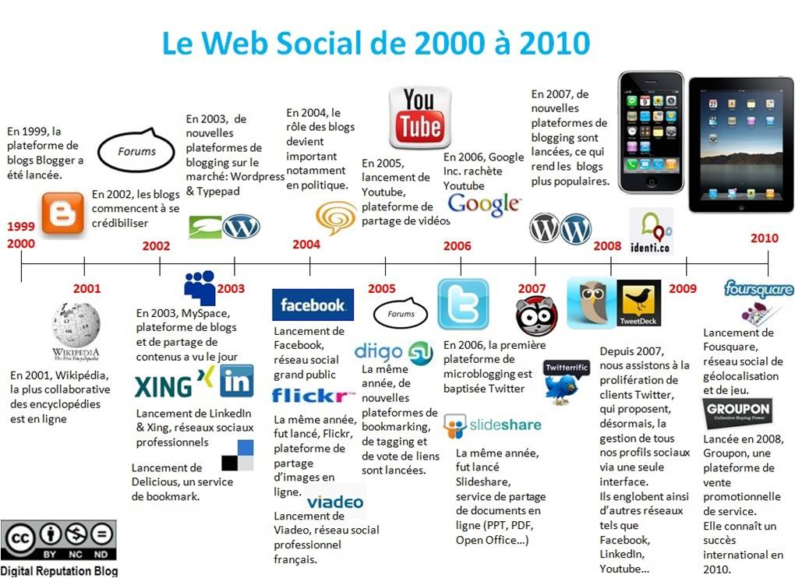
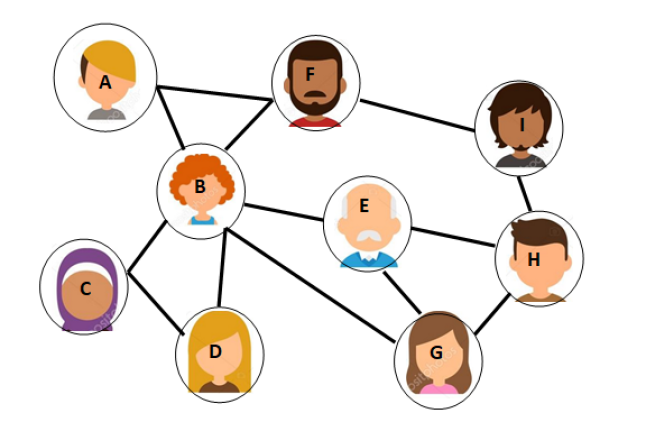
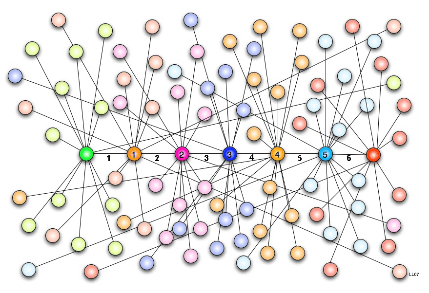
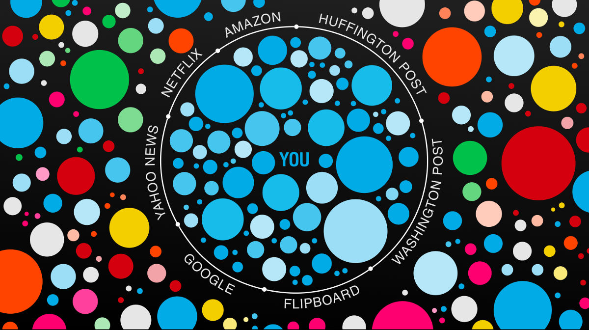

Introduction
Les réseaux sociaux font aujourd'hui partie de notre quotidien. On les utilise pour discuter, partager des photos, suivre l'actualité ou rester en contact avec ses proches.
Histoire des réseaux sociaux
Les premiers réseaux sociaux apparaissent bien avant ceux que l'on connaît aujourd'hui. En 1973, Talkomatic permet déjà à plusieurs personnes de discuter en ligne. En 1979, Usenet introduit les forums de discussion.
En 1997, SixDegrees.com propose pour la première fois de créer un profil et de se connecter à d'autres personnes. Mais c'est surtout en 2004, avec la création de Facebook par Mark Zuckerberg, que les réseaux sociaux deviennent vraiment populaires.
Ensuite apparaissent Twitter, Instagram, WhatsApp et Snapchat, qui attirent de plus en plus d'utilisateurs, notamment les jeunes. Aujourd'hui, des milliards de personnes utilisent les réseaux sociaux dans le monde.

Les réseaux sociaux et les graphes
Pour comprendre comment fonctionnent les réseaux sociaux, on peut les représenter avec des graphes. Sur ce schéma, chaque cercle représentant une personne correspond à un sommet du graphe. Les traits reliant les personnes sont les arêtes : ils montrent les relations entre elles. On voit ainsi comment les individus sont connectés entre eux au sein d'un réseau social.

Certaines relations sont réciproques, comme sur Facebook, tandis que d'autres fonctionnent dans un seul sens, comme sur Twitter.
Le concept de petit monde

En 1967, le chercheur Stanley Milgram montre que deux personnes quelconques sont reliées en moyenne par six intermédiaires. C'est ce qu'on appelle la théorie des six degrés de séparation.
Avec les réseaux sociaux, cette distance est encore plus réduite. Il est donc souvent plus facile qu'on ne le pense de retrouver ou de contacter quelqu'un.
Limites et esprit critique

Même s'ils ont de nombreux avantages, les réseaux sociaux peuvent aussi poser des problèmes. Les utilisateurs ont tendance à rester entre personnes qui pensent comme eux, ce qui limite l'accès à d'autres points de vue.
Il est donc important de garder un esprit critique et de ne pas croire tout ce que l'on voit en ligne.
Conclusion
Les réseaux sociaux ont transformé notre manière de communiquer et de nous informer. Bien utilisés, ils peuvent être très utiles, mais il est important de les utiliser avec recul et responsabilité.